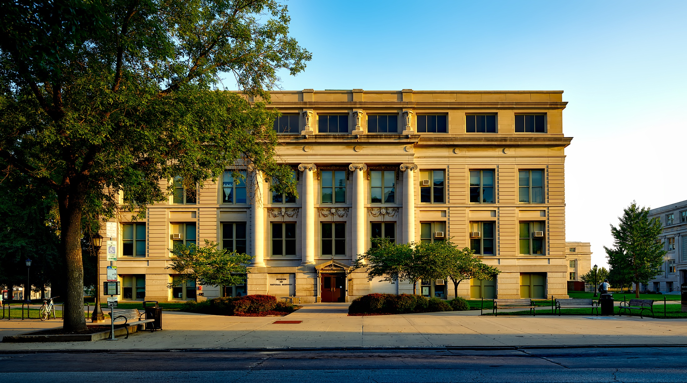

TECHIE UNIVERSITY
Techie university is owned by Satyam Pandey.
It is approved
by AICTE and It is an ISO certified Institution .
OUR CAMPUS
TECHIE UNIVESITY has been consistent to maintain excellence in the academic standards since its inception.
Learning is an enjoyable experience here, with experienced faculty, inspiring libraries and
stimulating discussion rooms, large playgrounds and state-of-the-art labs. With a view to impart
quality education.
the campus consist of three colleges
College of Engineering and Technology
College of Medicine and Health Sciences
College of Science and Humanities and School of Management
CAMPUS VIEW
UNIVERSITY OF THE FUTURE...
TECHIE UNIVERSITY has an area of 600 acre and campus is located at lucknow,uttarpradesh is well landscaped with ample greenery
and is connected by road and rail. The 43 lakh sq ft built up area comprises state-of-the art infrastructure and facilities, while
sculptures and paintings dot the campus, serving as a source of inspiration and relaxation.
The campus is equipped with all the latest facilities such as
Video-conferencing - interconnecting with other campuses
Wireless-enabled lab and campus
State-of-the-art, high capacity, Servers with multiple operating systems
A Central Library with vast knowledge resources - printed and electronic
High capacity 32 Mbps Internet Connectivity through multiple fiber links
1 GB link with 155mbps internet bandwidth through National Knowledge Network (NKN)
REACHING THE HEIGHTS
To meet the changing needs of learning and research, TECHIE UNIVERSITY has added many new facilities to the existing infrastructure. These include:
A 16-storeyed IT block, with over 3 lakh sq ft built up space
A 16-storeyed Library and Administrative Block with over 3 lakh sq ft built up space
Auditorium to seat 4500, with several Conference Halls and Discussion Rooms
Four 10-storeyed Hostel Blocks to house 3500 students
Results of cse students
| S.NAME |
Package Offered |
| Rudra |
32 lakhs |
| Shubham Pandey |
28 lakhs |
| Manish Tiwari |
28 lakhs |